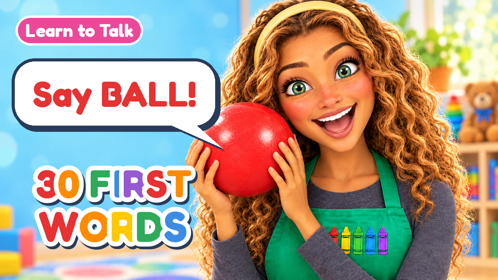
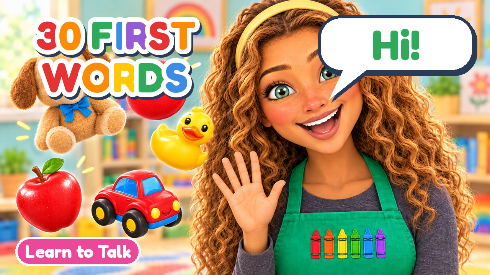
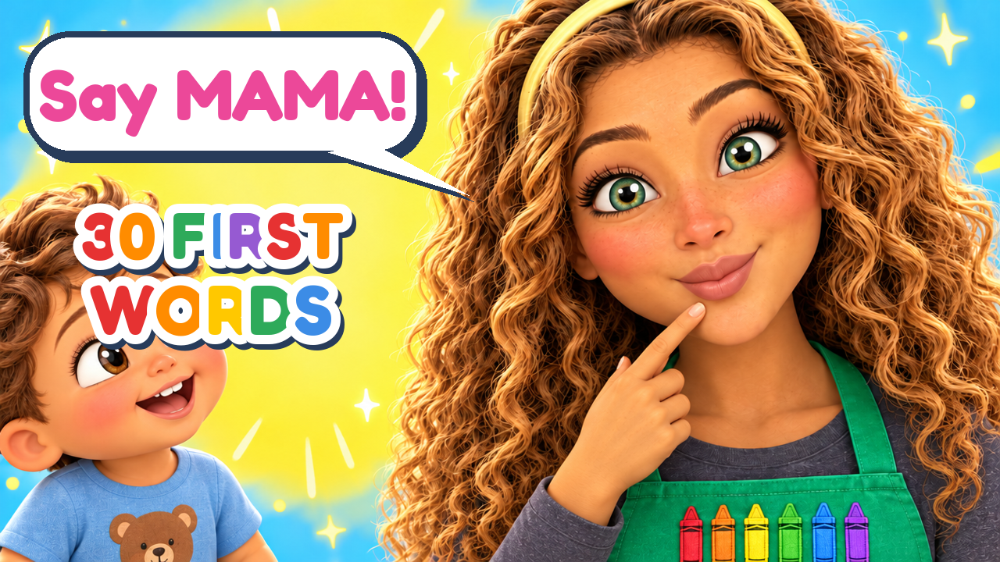

Video 1 Upload Guide: 30 First Words
Miss Poppy's Playroom · YouTube long video · 13:14



Step by step
- Open YouTube Studio
On a computer go to studio.youtube.com → Create (top right) → Upload videos. - Pick the video file
Choose FINAL-30-first-words-FULLQUALITY.mp4 (best quality). If you only have the GitHub copy, use FINAL-30-first-words-small.mp4. - Title
Paste: 30 First Words for Toddlers | Learn to Talk with Miss Poppy | Toddler Learning Video - Description
Paste the description below (the chapter times are already in it). - Thumbnail
Upload thumbnail → pick one of THUMBNAIL-option-1/2/3.png (my pick: option 1, "Say BALL!"). - Playlist
Create a playlist Learn to Talk with Miss Poppy and add the video. - Audience — IMPORTANT
Select Yes, it's made for kids. This is required by law (COPPA) for toddler videos. YouTube will turn off comments and personalized ads for you; that's normal for kids channels. - Show more → Altered content
No (Miss Poppy is an obviously animated cartoon character, not a real person). The AI note is already in the description. - Show more → Tags
Paste the tags below. - Show more → Language & captions
Video language: English. Then on the Video elements step: Add subtitles → Upload file → With timing → choose CAPTIONS-30-first-words.srt. - Show more → Category
Education. - Video elements
Skip end screens and cards: YouTube turns them off for made-for-kids videos. The playlist from step 6 keeps kids watching instead. - Checks
Wait for copyright check (all music and voices are original/AI-made for this channel, so it should pass). - Visibility
Public, or Schedule for a weekday morning (7–9 am your time is when toddler parents watch).
Description (copy & paste)
Learn 30 first words with Miss Poppy! 🖍️ A gentle, slow toddler learning video with pauses so your little one can say each word too: hi, mama, dada, ball, car, dog, cat, cow, milk, apple, more, up, all done, night-night and more.
Watch together and cheer your toddler on! Every word gets a "Can you say…?" pause, mouth shapes to copy, toys, animals, songs and a wiggle break.
👶 For babies, toddlers and preschoolers (ages 1–4)
🔔 Subscribe for a new learn-to-talk video every week
Chapters:
0:00 Hello song
0:26 Hi, friends!
1:04 Mama, dada & baby
2:29 Ball, car & book
3:40 Bubbles & block
4:18 Wiggle break!
4:33 Farm animals: dog, cat, cow, duck
5:56 Fish
6:19 Food: milk, apple, banana, cookie
8:13 Clap break!
8:25 More, up, go, all done
9:56 Hug, shoe, hat, bath
11:11 Moon & night-night
11:55 Super-fast review
12:47 Goodbye song
Miss Poppy is an animated character made with AI animation tools. This video is for learning and fun, not a substitute for speech therapy. If you're concerned about your child's speech, talk to your pediatrician or a speech-language pathologist.
Tags (copy & paste)
first words for toddlers, learn to talk, toddler learning video, baby first words, learn to talk for toddlers, toddler speech, educational videos for toddlers, baby learning video, first words, speech practice for toddlers, toddler videos, preschool learning, miss poppy, miss poppy's playroom